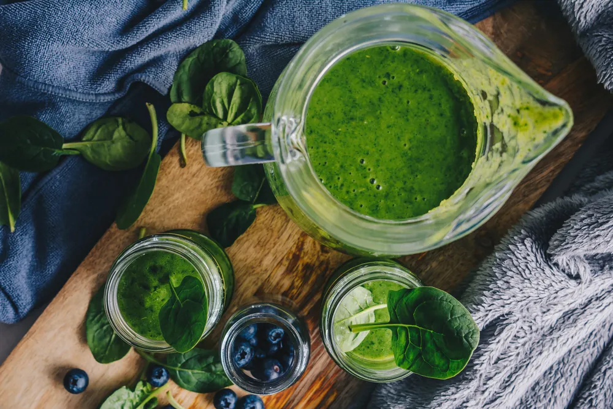

Foods All Type 1 Diabetics Should Be Eating

What makes one food better than another for people with type 1 diabetes largely comes down to a food’s glycemic index (GI). The glycemic index scores foods on a scale of 0 to 100 based on how much they affect blood glucose levels two hours after consumption. Foods with a GI score of 55 or lower cause a lower and slower rise in blood glucose levels and are therefore more fit for people with type 1 diabetes. In addition to a low GI score, a healthy vitamin, mineral, fiber, and fat profile can also all contribute to a food’s suitability.
Green Leafy Vegetables and Tubers
Not only do green leafy vegetables have a very low GI score, but they are also overflowing with vitamins, minerals, and nutrients. Specifically, leafy greens like spinach and kale are great sources of potassium, vitamin A, and fiber.
Green leafy vegetables include:
- Spinach
- Collard greens
- Kale
- Cabbage
- Bok choy
- Broccoli
In the same vein, tubers like sweet potatoes are a great, low GI alternative to regular white potatoes to pair with green leafy vegetables for a balanced meal. They contain fiber, vitamin A, vitamin C, and potassium.
Just be sure to eat the skin of sweet potatoes to get the most possible nutrition!
Whole Grains
Fiber slows down the absorption of nutrients by your body. For people with type 1 diabetes, this translates to less abrupt spikes in blood sugar and more stable levels overall. Therefore, as someone with type 1 diabetes, it would be wise to switch any refined white grains with whole grains, which contain more fiber.
Fortunately, for any of your favorite refined white grains, there is likely a whole grain alternative, with whole grain options including:
- Brown rice
- Whole-grain bread
- Whole-grain pasta
- Buckwheat
- Quinoa
- Millet
- Bulgur
- Rye
Beans
According to Medical News Today , another great replacement for refined white grains is beans. Not only are they high in protein and low on the GI scale, but beans are also high in fiber which means you don’t have to eat a lot of them to feel full. This feeling of fullness can help you reduce your overall carb intake, which can make your blood glucose level easier to manage.
- Kidney beans
- Pinto beans
- Black beans
- Navy beans
- Adzuki beans
Fatty Fish
Certain types of fish contain healthy polyunsaturated and monounsaturated fats that can improve blood sugar control and blood lipids in people with diabetes, says Medical News Today.
Specifically, fatty fish like salmon contain omega-3 fatty acids called eicosapentaenoic acid (EPA) and docosahexaenoic acid (DHA). Other than positively affecting blood sugar control and blood lipids, omega-3 fatty acids are also essential in maintaining proper body, heart, and brain function.
The types of fish to prioritize include:
- Salmon
- Mackerel
- Sardines
- Albacore tuna
- Herring
- Trout
When possible, prioritize non-canned fish options to minimize your mercury intake.
Nuts and Seeds
Like fish, certain nuts and seeds can be a great, low-glycemic way to add more healthy fats to your diet to help keep your heart healthy. It’s especially important for people with type 1 diabetes to prioritize heart health due to the fact that they may have a higher risk of heart disease or stroke.
Walnuts specifically are a very high source of omega-3 fatty acids, in addition to protein, vitamin B-6, magnesium, and iron. They were even found in a 2018 study to be linked with a lower incidence of diabetes in the first place.
As far as seeds go, chia seeds share many of the same benefits as walnuts with the added benefit of having high antioxidant properties. Chia seeds have also been clinically shown to significantly contribute to weight loss leading researchers to label it as an effective form of diabetes management.
Fruits and Berries
When consumed the right way, fruits and berries are the perfect sweet tooth alternative to junk food with little to no negative effects on blood glucose levels. Similar to chia seeds, certain berries help to prevent oxidative stress, which is linked to all sorts of health conditions, both diabetes-related (heart disease) and not (cancer), says Medical News Today.
- Blueberries
- Blackberries
- Strawberries
- Raspberries
With fruits, citrus fruits, in particular, are believed to be especially antidiabetic. At least in the case of oranges, this antidiabetic effect is believed to be the result of two bioflavonoid antioxidants called hesperidin and naringin.
Fruits to prioritize include:
- Oranges
- Grapefruits
- Lemons
A Sample Day of Eating for People with Type 1 Diabetes
If you’re not sure where to start with the information above, below are three meals to start with, one for breakfast, lunch, and dinner, as recommended by the American Diabetes Association.
Breakfast
Superfood Smoothie
Blueberries, spinach, and almond milk make this a Superfood Smoothie and a great way to start your day! Superfoods provide key nutrients that are lacking in the typical western diet.
- Unsweetened almond milk – 1 cup
- Frozen blueberries – 1 cup
- Baby spinach – 2 cup
- Banana – 1
Prep time – 5 min / Servings – 2 Servings / Serving size – about 1 cup.
Learn how to make it by clicking here !
Lunch
Chicken Caesar Salad Lunch Wraps
If you are tired of the same boring sandwich for lunch, try this restaurant-style wrap. Use cooked rotisserie chicken from your grocery store to save time.
- Cooked chicken (diced ) – 1 1/2 cup
- Light Caesar salad dressing – 3 tbsp
- Parmesan cheese (freshly shredded) – 3 tbsp
- Bagged romaine lettuce salad – 4 cup
- Whole Grain Tortillas (10-inch, low-carb) – 4
Prep time – 10 min / Servings – 4 Servings / Serving size – 1 wrap.
Learn how to make it by clicking here !
Dinner
“Spaghetti” and Meatballs
Spaghetti squash has a fraction of the carbs and calories of regular spaghetti, making this revamped childhood favorite a hearty meal you can enjoy any day of the week!
- Small spaghetti squash – 1
- Very lean ground beef (95% lean) – 1 lbs
- Plain bread crumbs – 1/4 cup
- Grated, reduced-fat Parmesan cheese (divided) – 3 tbsp
- Water (plus extra for cooking squash, divided) – 3/4 cup
- Chopped fresh parsley – 2 tbsp
- Egg(s) – 1
- Garlic powder – 1 tsp
- Black pepper – 1/2 tsp
- Low-sodium spaghetti sauce – 2 cup
Prep time – 25 min / Cook time – 50 min / Servings – 4 Servings / Serving size – 2 meatballs, 1 cup spaghetti squash, and 1/2 cup sauce.
Learn how to make it by clicking here !
Source: https://activebeat.com/diet-nutrition/foods-all-type-1-diabetics-should-be-eating/